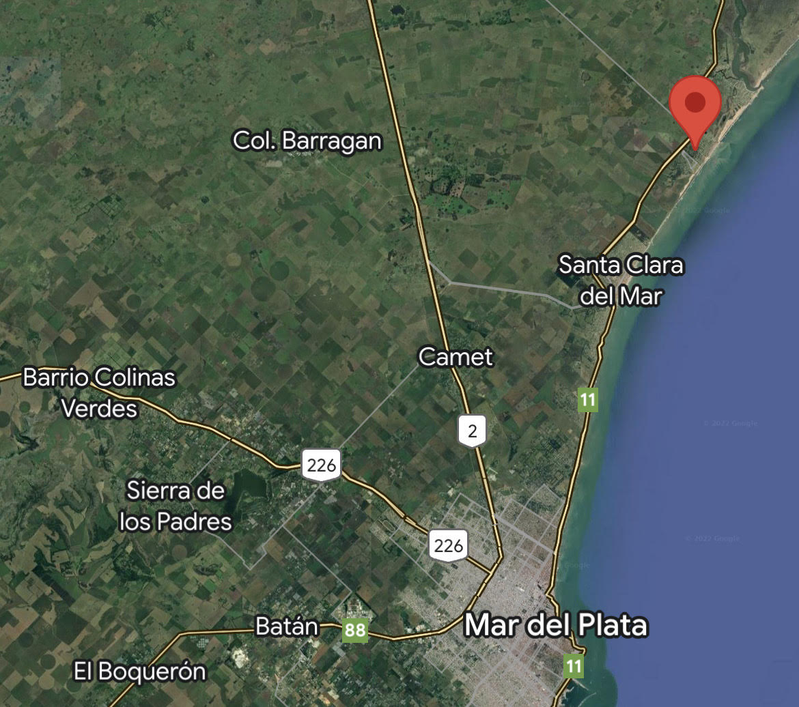

Ubicacion
A 28 kilómetros al norte de la ciudad de Mar del Plata y a solo 9 kilómetros al sur del Balneario Parque Mar Chiquita, en el kilómetro 487 de la ruta provincial N°11 se encuentra esta singular localidad de 300 hectáreas. Mar de Cobo es una Reserva Forestal, producto de sus majestuosas arboledas (álamos, pinos, olmos, cipreses y lambercianas), que alberga numerosas especies de aves y forma un techo natural que transforma a la localidad en un lugar de ensueño. Además se destacan los bosques de “zarza mora”, son ellos la tentación de todos los que se deleitan saboreando sus exquisitos frutos. Se puede disfrutar de caminatas, paseos en bicicleta, avistaje de aves, playas, etc.
Historia
La localidad de Mar de Cobo comienza a contar su historia formal en el año 1947, cuando la Compañía General de tierras Mar de Cobo S.A., compró a la familia Ugarteche Anchorena un predio correspondiente a 300 hectáreas provenientes de un desprendimiento de la Estancia “San Manuel”. Una vez procedida la división, de realiza su loteo y urbanización. Las calles poseen un particular trazado que forman semicírculos que comienzan y terminan en la avenida de acceso “Manuel Cobo”, la cual conduce al mar. Con el fin de construir un nuevo espacio público, en enero de 2008 se inauguró la plaza Daniel Tinayre en tierras donadas por la reconocida conductora Mirtha Legrand. En noviembre del 2011 se ha inaugurado el Parador Turístico Integrador que actualmente funciona para brindar servicios turísticos y culturales, y como nexo de la municipalidad.
Quienes Somos
Somos Ana y Gonzalo, dos personas que hace muchos años aún sin conocerse descubrimos en Mar de Cobo, nuestro lugar en el mundo. Las Cañas es un sueño que comenzó hace 10 años y poco a poco fue haciéndose realidad, hoy tenemos 3 hermosas casas que ponemos q disposición de todos nuestros huepesdes con nuestra atención personalizada siempre presente